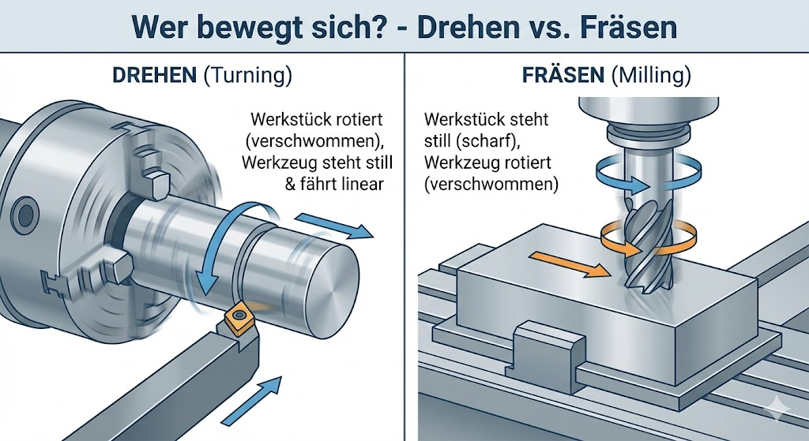
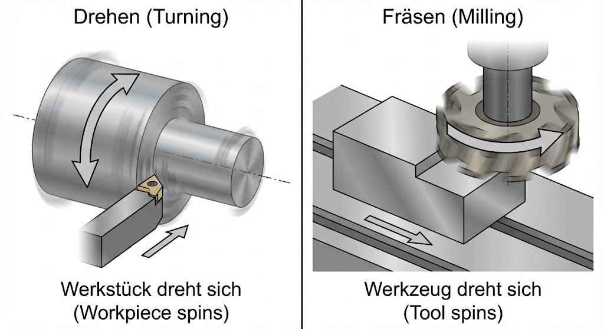
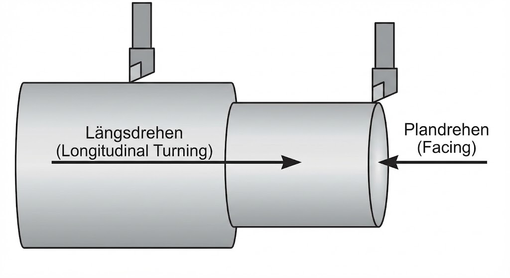
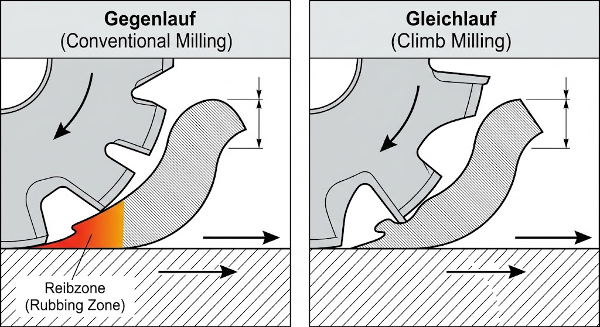
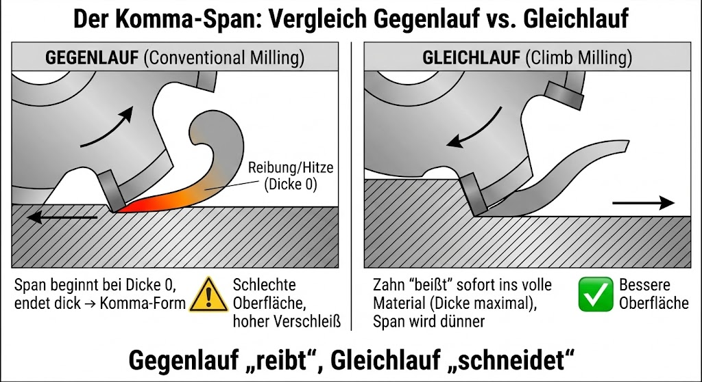

Skript-Bezug
TODO: Lege passende Skizzen/Bilder in LFB_mvp_hko/skript1/ ab (Werkzeugmaschine,
Baugruppen, Standzeit-Beispiele) und verlinke sie hier.

Theorie / Überblick
Standzeit – Einflussgrössen (Auswahl)
- Schnittgeschwindigkeit, Spantiefe
- Werkstoff (Zerspanungswerkstoff) & Schneidstoff
- Schneidgeometrie
- Kühlung/Schmierung
Hauptbaugruppen Werkzeugmaschine (Auswahl)
- Gestell/Bett, Führungen
- Spindel, Antriebe
- Tisch/Schlitten (Achsen)
- Steuerung (CNC)
- KSS-/Späne-System
Taylor-Gleichung als Merkhilfe: höhere v_c → oft kleinere Standzeit T.

Interaktiv: Standzeit-Trend (didaktisch)
Dieses Tool zeigt nur einen Trend (hoch/mittel/tief) – kein physikalisches Modell.

| Schnittgeschwindigkeit v_c | |
| Spantiefe | |
| Werkstoff | |
| Schneidstoff | |
| Schneidgeometrie | |
| Kühlung/Schmierung |
Schnittdaten-Rechner (Drehzahl n)
Formel (Drehen/Fräsen, Richtwert): mit d in Meter. Hier rechnen wir mit d in mm (wird intern umgerechnet).
Standzeit-Diagramm (v_c – T) (didaktisch)
Visualisierung einer typischen Beziehung: höhere v_c → kleinere Standzeit T. Keine reale Werkzeugdatenbank; nur Trend-Kurve.
—
Self-Check: Hauptbaugruppen zuordnen
Ordne jeder Baugruppe die passende Hauptaufgabe zu.
| Baugruppe | Hauptaufgabe | Prüfen | Feedback |
|---|
